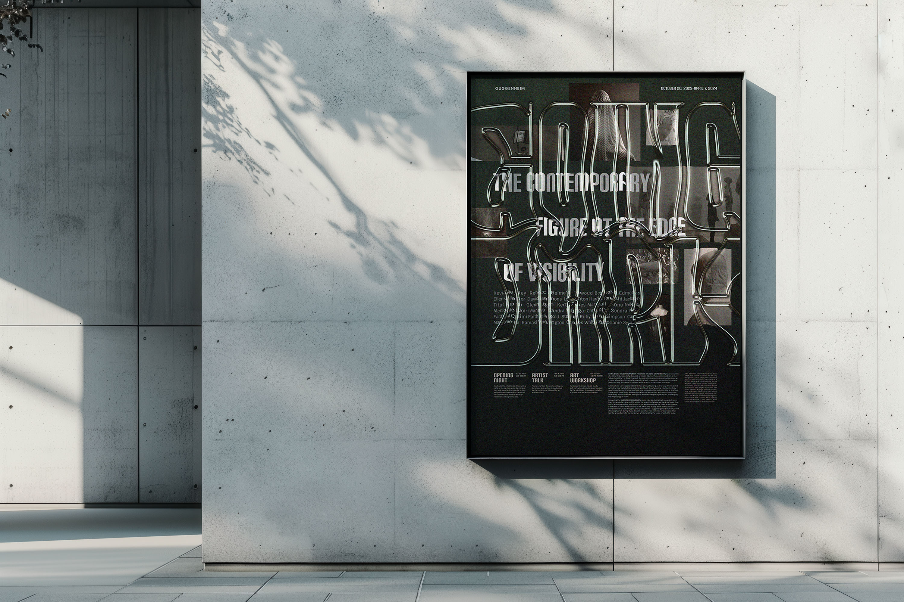
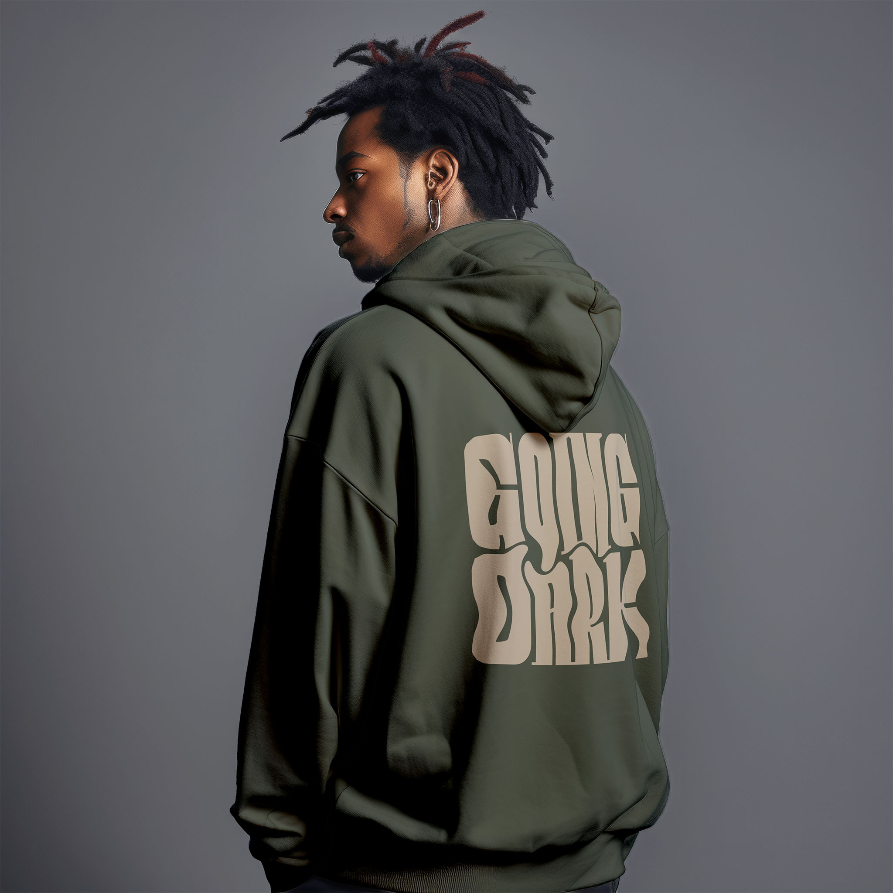
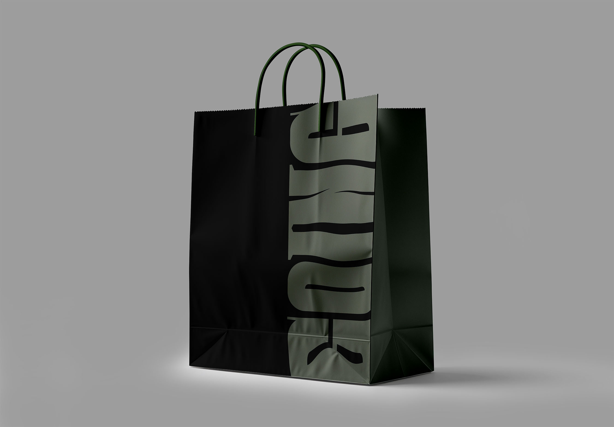

Exhibition Poster:
Going Dark
Year
Medium
Measurement
Instructor
2025
Indesign, Photoshop, After Effects
23 in x 33 in
Megan Irwin

Context
The Guggenheim exhibition “Going Dark” presents veiled human figures to explore the concept of the “edge of visibility.” My redesign extends this idea of the boundary between seen and unseen across multiple media, forming a cohesive and immersive visual language.
Strategy
Designing the poster, I aimed for viewers to directly experience the “edge of visibility” through their interaction with it. The poster therefore extends beyond a promotional medium and becomes part of the exhibition experience itself.

final poster
Process
To visualize the boundary of visibility, I investigated various typographic approaches and went through numerous layout iterations.

design process
Application
Centered around the poster, I explored various design applications including exhibition merchandise and vertical short-form promotional videos. The fluid, melting quality of the glass typography proved particularly well suited for motion.


merchandise
promitional video